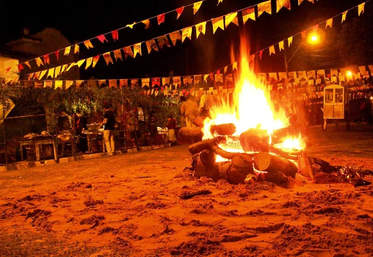
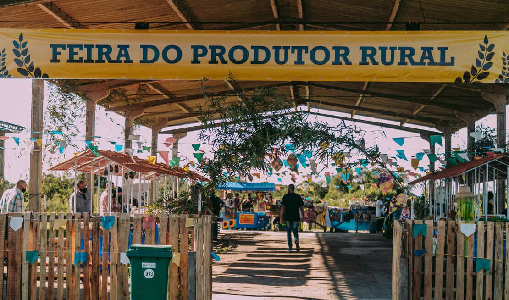
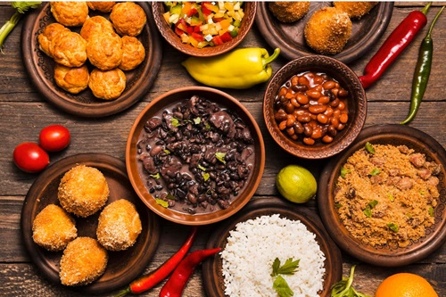
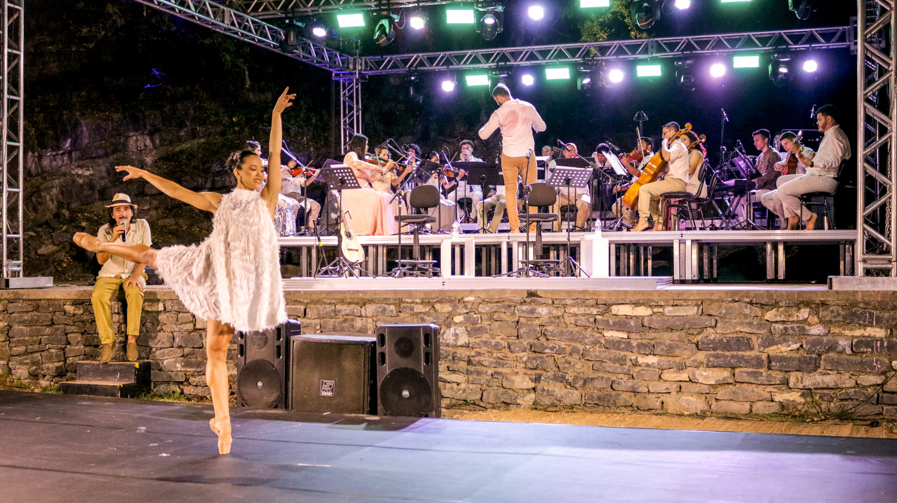

Sobre a Conexão
A conexão entre o campo e a cidade vai além da troca de produtos. É uma celebração das culturas que se entrelaçam: o ritmo tranquilo do campo com a energia criativa da cidade. Juntas, essas realidades constroem uma sociedade mais rica, sustentável e diversa.
Tradições do Campo
As festas do campo são marcadas por simplicidade e união. Danças como a quadrilha, fogueiras, trajes típicos e pratos como pamonha, canjica e bolo de milho encantam visitantes e reforçam laços comunitários.
Influências da Cidade
Nas últimas décadas, as festas ganharam novos elementos vindos da cidade: iluminação moderna, shows musicais, barracas temáticas e presença digital. Isso atrai novos públicos e ajuda a manter vivas as tradições com uma cara renovada.
Curiosidades e Benefícios
- 🎉 Festas juninas têm origem no interior, mas hoje movimentam economias urbanas.
- 🌽 Agricultores trazem saberes tradicionais para feiras nas cidades.
- 🎶 Músicas de raiz influenciam cantores da cena pop urbana.
- 👩🌾 A troca cultural aproxima gerações e reduz o preconceito entre estilos de vida.
Galeria



